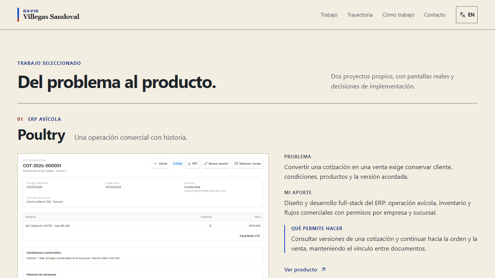
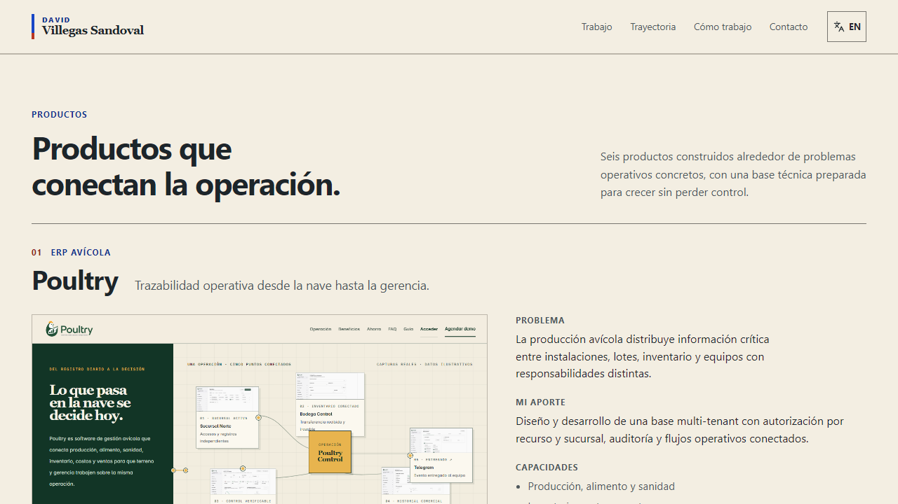

David Villegas Sandoval · Evidencia · Actualizada el 5 septiembre 2026
Portafolio: antes y después.
Proyectos con su alcance completo y enlaces a sus páginas iniciales. Trayectoria con cargos en inglés, fechas corregidas y el nuevo CV. El hero aprobado se conserva.
Productos completosDescripciones anteriores recuperadas
Julio / agosto 2026Fin de Blaze / Polodev
47 pruebas pasanBuild, lint y navegación comprobados
Corrección sobre la iteración anterior, a 1280 × 720. Descripciones generales recuperadas, capacidades del producto y enlaces a su página inicial.


Capturas reales del navegador. Proyectos y experiencia comparan la iteración anterior con las correcciones del 5 de septiembre. Inicio, móvil y vistas generales conservan como referencia el diseño original. Las vistas generales son miniaturas reducidas; ambos CV se muestran con el mismo ancho de página.